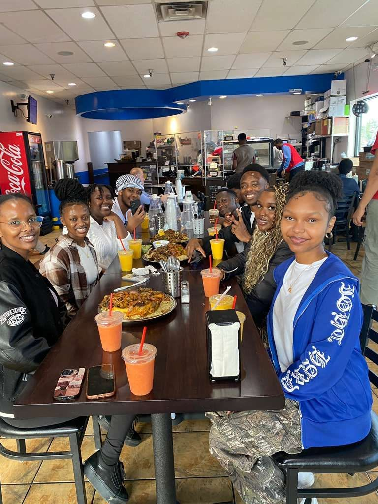
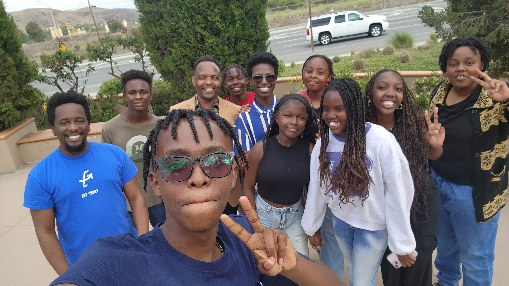

International youth project
The Light
A DK Foundation mentorship project helping young people grow in faith, leadership, purpose, and life skills.

Faith
Mentorship, prayer, worship, and practical guidance for a brighter future.

About the project
A safe place for young people to discover purpose.
The Light is hosted by DK Foundation, a non-profit registered in Washington State. It creates a positive, faith-filled environment where youths from different backgrounds are mentored, encouraged, and equipped to become responsible leaders.
Through conferences, mentorship, outreach, and Christian teaching, the project responds to challenges such as lack of guidance, unemployment, depression, peer pressure, substance abuse, violence, and loss of direction.
Mission
Mentor, train, and empower the next generation.
We provide Christian mentorship, leadership training, educational support, and opportunities that help young people grow spiritually, emotionally, socially, and professionally.
Vision
Spiritually grounded, confident, purpose-driven leaders.
The Light envisions young people who shine in their communities and positively impact the world through faith, character, and service.
What The Light helps young people build.
The project brings youths together for mentorship, faith formation, practical training, friendship, and community service.
Christian values
Faith, moral leadership, prayer, worship, and spiritual growth.
Mentorship
Guidance from experienced Christian leaders, role models, pastors, and professionals.
Leadership skills
Communication, teamwork, integrity, confidence, and personal responsibility.
Education
Encouragement toward learning, career development, entrepreneurship, and innovation.
Safe spaces
Room for young people to share stories, ask questions, build friendships, and receive care.
Community service
Outreach, school visits, charity events, counseling, and practical acts of compassion.
Programs that turn encouragement into direction.
See the impactYouth conferences
International gatherings with worship, prayer, speakers, pastors, artists, counseling, networking, and talent showcases.
Christian mentorship
Mentors provide spiritual guidance, accountability, encouragement, and support as youths overcome challenges and build strong values.
Leadership training
Workshops and team activities develop communication, emotional wellness, career readiness, and practical leadership.
Community outreach
Charity events, school visits, counseling sessions, and service initiatives support vulnerable youths and families.
Impact
Helping young people shine.
The Light inspires hope, restores purpose, and nurtures young leaders who are spiritually strong, socially responsible, and committed to making a positive difference.
Together, we can raise a generation that shines as a light in the world.
Through faith, mentorship, leadership, and empowerment, The Light guides young people toward futures filled with purpose, hope, and positive impact.